Exchange Message Trail
Exchange Message TrailExchange Message Trail
EMT находит письмо в Microsoft Exchange Server 2016 и 2019 (on-premises) и показывает доставку каждому получателю. Возможно, EMT работает и с Exchange Server SE (не проверено). Если нужно, EMT удаляет письмо из ящиков.
EMT отвечает на вопросы:
- Отправил ли пользователь письмо?
- Дошло ли письмо? В какую папку?
- Почему письмо не дошло? На каком шаге остановилась доставка?
Поиск писем
Находит письмо в журнале доставки. Показывает статус каждого получателя. Проверяет ящик получателя.
Удаление
Находит копии письма в ящиках. Удаляет их. Проверяет результат.
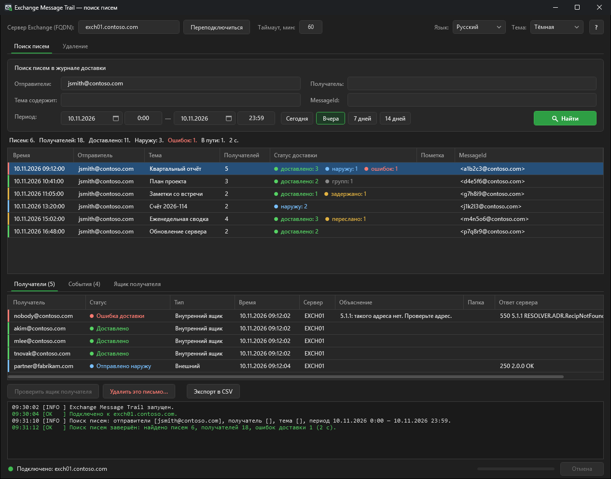
Установка и запуск
Требования
| Что | Требование |
|---|---|
| Exchange | Exchange Server 2016 или 2019, on-premises. Exchange Server SE — возможно, не проверено. |
| Компьютер | Сервер Exchange или компьютер Windows в том же домене |
| PowerShell | Windows PowerShell 5.1 |
| .NET | .NET Framework 4.5 или новее |
| Сеть | Доступ по HTTP к http://<сервер>/PowerShell/ |
| Вход | Kerberos (доменная учётная запись) |
Exchange Management Tools ставить не нужно. EMT подключается через удалённый PowerShell.
Установка
- Скопируйте папку EMT на компьютер.
- Сохраните структуру папок. EMT нужны папки
src,Lang,guiиhelp. - Если вы скачали ZIP-архив, разблокируйте файлы:
Get-ChildItem -Recurse | Unblock-File
Запуск
- Дважды щёлкните
EMT.cmd.
Окно открывается поверх остальных окон. Консоль PowerShell не видна.
Ярлык
Ярлык Exchange Message Trail со значком EMT лежит в папке EMT. EMT создаёт его при первом запуске.
Если перенести папку, EMT создаст ярлык заново при следующем запуске. При необходимости скопируйте ярлык на рабочий стол или в меню «Пуск».
Ярлык открывает EMT.cmd. Если ярлык удалить (вручную или антивирусом), EMT больше не создаёт его в этой папке.
Чтобы создать его заново, выполните в папке EMT команду:
powershell.exe -ExecutionPolicy Bypass -File .\src\New-EmtShortcut.ps1Запуск из PowerShell:
powershell.exe -STA -ExecutionPolicy Bypass -File .\ExchangeMessageTrail.ps1 -Server exch01.contoso.com| Параметр | Назначение |
|---|---|
-Server | FQDN сервера Exchange. EMT запоминает последний сервер. |
-Language | Код языка, например en или ru. |
-Theme | Dark или Light. По умолчанию Dark. |
EMT-Classic.cmd запускает прежнее окно (Windows Forms) с теми же функциями.
Используйте его, только если обычное окно не работает. В одной из следующих версий его уберут.
Окно
| № | Часть | Назначение |
|---|---|---|
| 1 | Верхняя строка | Сервер, Подключиться, таймаут операций, язык и тема |
| 2 | ? | Открывает эту справку. Клавиша F1 тоже. |
| 3 | Вкладки | Поиск писем и Удаление |
| 4 | Критерии | Отправители, получатель, тема, MessageId и период |
| 5 | Найти | Запускает поиск. Клавиша Enter тоже. |
| 6 | Строка итогов | Числа результата. Красным выделено только число ошибок. |
| 7 | Письма | Одна строка на каждое письмо |
| 8 | Подробности | Получатели, события и проверка ящика выбранного письма |
| 9 | Действия | Проверить ящик получателя, Удалить это письмо…, Экспорт в CSV |
| 10 | Лог | Сообщения сеанса. Зелёный — успех, оранжевый — предупреждение, красный — ошибка. Операция дольше 5 секунд пишет в лог своё время. |
| 11 | Нижняя строка | Слева — подключение. Справа — текущая операция, ход выполнения и Отмена. |
Таблицы
- Чтобы изменить ширину колонки, перетащите границу заголовка.
- Чтобы отсортировать строки, щёлкните заголовок колонки.
- Чтобы переставить колонку, перетащите её заголовок.
- Чтобы скопировать выбранные строки с заголовками, нажмите Ctrl+C.
- В названии вкладки — число строк, например Получатели (5).
Чтобы остановить операцию, нажмите Отмена. EMT остановится после текущего шага.
Подключение и роли
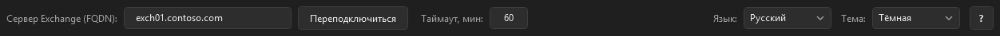
- В поле Сервер Exchange (FQDN) введите полное имя сервера.
- Нажмите Подключиться.
- Убедитесь, что в нижней строке зелёный индикатор и «Подключено».
- Убедитесь, что в логе нет предупреждений о недостающих ролях.
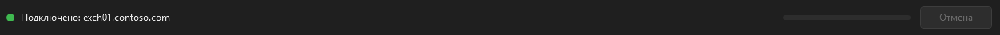
При подключении EMT проверяет роли вашей учётной записи. Функция без нужной роли недоступна: её кнопка выключена. Лог показывает предупреждение для каждой недоступной функции.
| Функция | Командлеты | Группа ролей |
|---|---|---|
| Поиск писем | Get-MessageTrackingLog, Get-TransportService, Get-Recipient | Organization Management, Records Management или Compliance Management |
| Проверка ящика | Get-InboxRule, Get-MailboxJunkEmailConfiguration, Get-Mailbox, Get-MailboxStatistics | Organization Management или Recipient Management |
| Поиск копий, проверка | New-ComplianceSearch, Search-Mailbox | Discovery Management |
| Мягкое удаление | New-ComplianceSearchAction | Discovery Management |
| Безвозвратное удаление | Search-Mailbox -DeleteContent | Роль Mailbox Import Export (назначается вручную) |
Чтобы назначить роль Mailbox Import Export, выполните в Exchange Management Shell:
New-ManagementRoleAssignment -Role "Mailbox Import Export" -User "<учётная запись>"После изменения ролей закройте EMT и запустите снова.
Поиск писем
Поиск писем читает только журнал доставки. Он не открывает ящики и не меняет данные.
- Откройте вкладку Поиск писем.
- Введите один или несколько критериев.
- Задайте период.
- Нажмите Найти.
- Выберите письмо в списке.
- Посмотрите вкладку Получатели.
Критерии
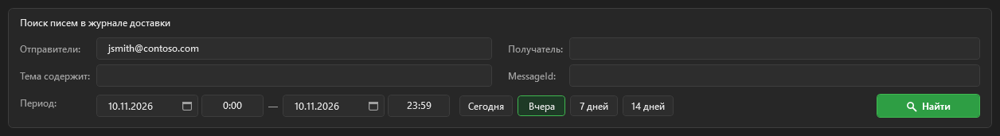
| Поле | Что вводить |
|---|---|
| Отправители | Один или несколько адресов, частей адреса или имён. Разделитель — запятая или точка с запятой. |
| Получатель | Один адрес, часть адреса или имя. Можно искать только по получателю. |
| Тема содержит | Часть темы |
| MessageId | Internet Message-ID, например <a1b2c3@contoso.com> |
| Период | Начало и конец: дата и время |
Задайте хотя бы один критерий. Только период — нельзя. Период — не больше 31 дня.
Период и время
- У каждой даты есть поле времени. Время — в формате Windows, например
14:30. - Конец периода включает свою минуту:
23:59— это до 23:59:59. - Сегодня, Вчера, 7 дней и 14 дней ставят период с 0:00 до 23:59.
- Кнопка текущего периода отмечена зелёным. Если изменить период вручную, отметка снимается.
- На маленьком экране после поиска критерии сворачиваются в одну строку, чтобы освободить место для результата. Чтобы изменить критерии, нажмите Показать критерии. Вкладка Удаление работает так же.
- Неверное время возвращается к последнему верному. В логе появляется предупреждение.
- Формат даты и первый день недели берутся из региональных настроек Windows.
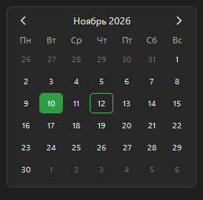
Неполные адреса
Можно ввести часть адреса или имени, например kim.
EMT найдёт полный адрес в адресной книге Exchange (Get-Recipient -Anr).
| Найдено | Что будет |
|---|---|
| Один адрес | EMT подставит полный адрес в поле. Лог покажет замену. |
| Несколько | Откроется окно со списком. Выберите адрес. Для отправителей можно выбрать несколько. |
| Ни одного | Окно с ошибкой покажет текст. Поиск не начнётся. |
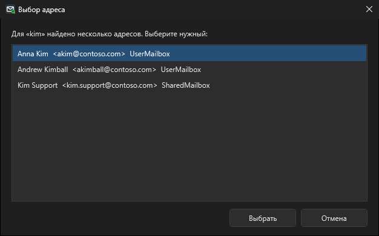
Поиск по получателю
Поиск по получателю быстрый даже для большого числа писем.
- Список показывает доставку только этому получателю.
- В колонке Пометка — «Остальные получатели — при выборе письма».
- Строка итогов начинается с «Получатель x:». Числа — по этому получателю.
- При выборе письма EMT загружает всех его получателей и события. Это занимает около секунды.
- При экспорте EMT спросит, загрузить ли сначала все письма.
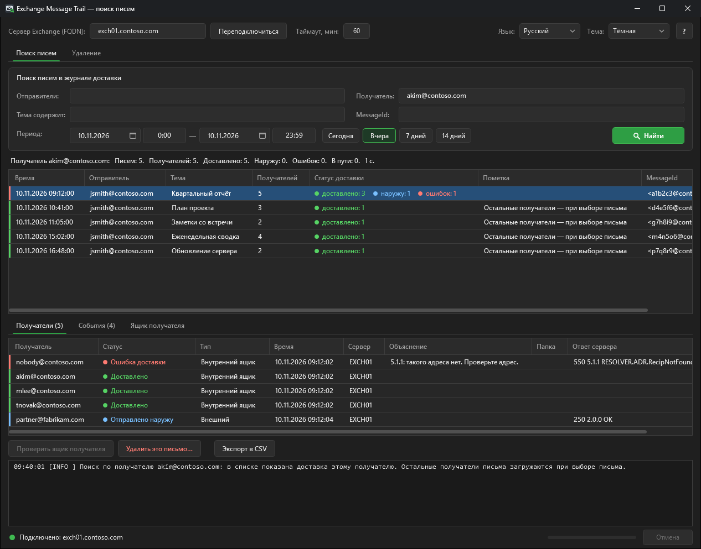
Статусы и цвета
Строки не заливаются цветом. Результат показывают две отметки:
- Колонка Статус доставки показывает каждый статус своим цветом, например доставлено: 3 наружу: 1 ошибок: 1.
- Левый край строки показывает худший статус письма.
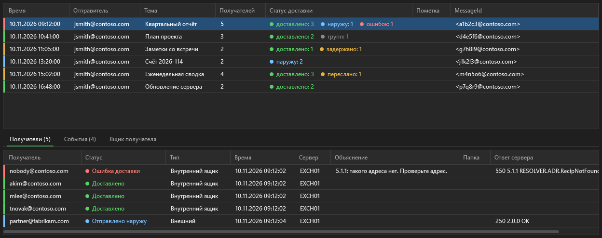
| Статус | Цвет | Что значит |
|---|---|---|
| Доставлено | Зелёный | Exchange положил письмо в ящик (DELIVER, DUPLICATEDELIVER). |
| Отправлено наружу | Синий | Exchange передал письмо внешнему серверу (SEND, SENDEXTERNAL). |
| Переслано (пересылка ящика) | Жёлтый | У ящика включена пересылка. Письмо ушло на адрес пересылки, в ящик не попало. |
| Задержано | Жёлтый | Доставка задерживается, Exchange повторяет попытки (DEFER). |
| Ошибка доставки | Красный | Exchange не доставил письмо (FAIL). |
| Отклонено группой | Красный | У группы ограничение на отправителей. |
| Отброшено | Красный | Exchange отбросил письмо с кодом ошибки. |
| В пути | Серый | Письмо передаётся между серверами Exchange. |
| Группа: разослано участникам | Серый | Адрес — группа. Письмо получают участники. |
| Не отправлено по настройке Exchange | Серый | Автоответ, автопересылка или отчёт, которые Exchange не отправляет по настройке. Это не ошибка. |
| Нет данных о доставке | Серый | В журнале доставки есть только приём письма. |
| Левый край | Письмо | Получатель |
|---|---|---|
| Красный | Кто-то из получателей не получил письмо | Ошибка доставки, отклонено группой, отброшено |
| Жёлтый | Доставка задерживается или ящик пересылает письмо | Задержано, переслано |
| Серый | Не все доставки завершены | В пути, группа, не отправлено по настройке, нет данных |
| Синий | Письмо у всех, часть получателей — внешние | Отправлено наружу |
| Зелёный | Письмо у всех получателей | Доставлено |
Exchange пишет DROP и для обычных шагов, например при развёртывании группы. EMT читает ответ сервера и показывает правильный статус.
Колонки получателей
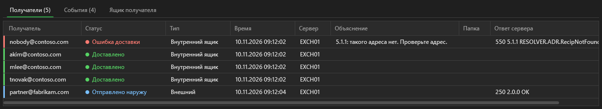
| Колонка | Содержимое |
|---|---|
| Объяснение | Причина проблемы по коду ответа сервера. Пусто при обычной доставке. |
| Папка | Папка доставки, если это не «Входящие». Обычно письмо переложило правило. |
| Ответ сервера | Текст сервера, например 550 5.1.1 RESOLVER.ADR.RecipNotFound. |
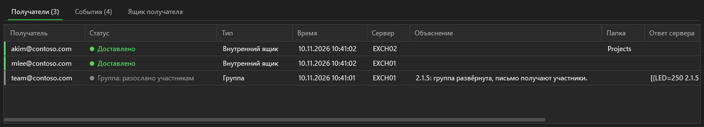
| Код | Объяснение |
|---|---|
5.1.1, 5.1.10 | Такого адреса нет. |
5.2.2 | Ящик получателя переполнен. |
5.2.3, 5.3.4 | Письмо слишком большое. |
4.4.7, 5.4.7 | Истекло время доставки. |
4.4.x | Нет связи с сервером получателя. Exchange повторит попытку. |
5.7.x | Отклонено: нет прав, ограничение, политика или фильтр. |
События
Дважды щёлкните письмо — откроется вкладка События. На ней все события журнала доставки в порядке времени.
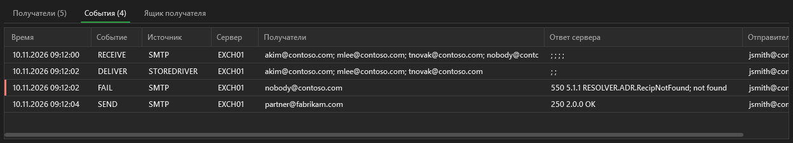
Ничего не найдено
Если писем нет, лог подскажет, что проверить:
- период: письмо могло быть раньше или позже;
- адреса: письмо могло прийти с другого адреса или на группу;
- тему;
- папки «Исходящие» и «Отправленные» отправителя: письмо могло не уйти.
Журнал доставки по умолчанию хранится 30 дней.
Проверка ящика
Журнал доставки видит письмо только до ящика. Проверка ящика показывает причины внутри ящика. Она только читает данные.
- Выберите письмо.
- На вкладке Получатели выберите внутреннего получателя.
- Нажмите Проверить ящик получателя.
- Посмотрите вкладку Ящик получателя.
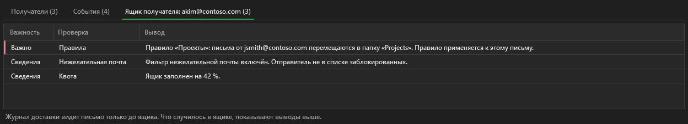
| Область | Что проверяет EMT |
|---|---|
| Правила | Правила для входящих: перемещение, удаление, пересылка. EMT сообщает, срабатывает ли правило на это письмо. |
| Нежелательная почта | Фильтр нежелательной почты, заблокированные и надёжные отправители |
| Пересылка | Пересылка ящика |
| Квота | Размер ящика и его ограничения |
Для внешнего адреса кнопка выключена.
Удаление
Безвозвратное удаление нельзя отменить. Пользователь не сможет восстановить письмо. Проверяйте результат перед каждым удалением.
Из поиска писем (рекомендуется)
- На вкладке Поиск писем выберите письмо.
- Нажмите Удалить это письмо….
- Убедитесь, что зелёная строка говорит «Данные из журнала доставки».
- Нажмите Найти копии.
- Посмотрите вкладки результата.
- Нажмите Удалить (мягко) или Удалить безвозвратно.
- Прочитайте окно подтверждения.
- Подтвердите удаление.
- Посмотрите вкладку Проверка.
EMT ставит период «за 5 минут до письма — 23:59 того же дня». Тогда поиск копий идёт за один день.
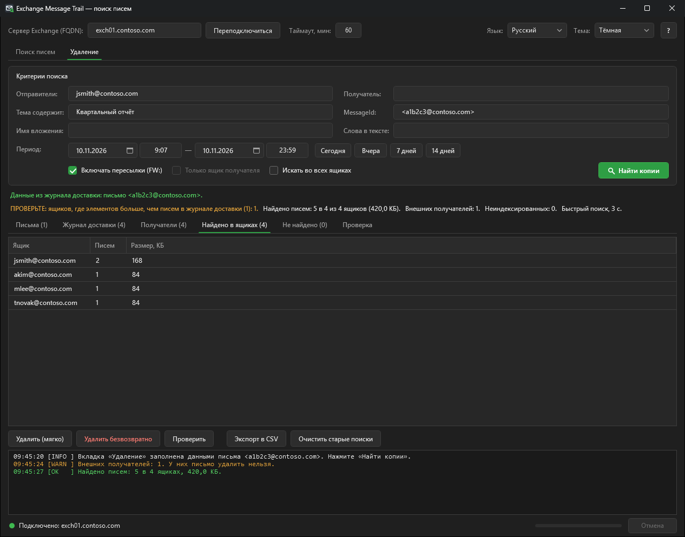
По своим критериям
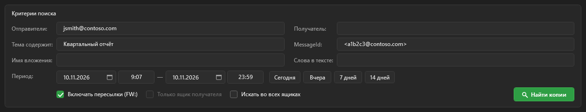
| Критерий или флажок | Назначение |
|---|---|
| Имя вложения | Имя файла в письме |
| Слова в тексте | Фраза в тексте письма |
| Включать пересылки (FW:) | Добавляет письма с той же темой от других отправителей |
| Только ящик получателя | Ищет и удаляет только в ящике из поля Получатель |
| Искать во всех ящиках | Ищет во всех ящиках организации. Это медленно. |
Строка над результатом показывает источник критериев: зелёный — из журнала доставки, оранжевый — введены вручную. Изменение критерия сбрасывает результат.
| Ящиков | Способ | Время |
|---|---|---|
| от 1 до 10 | Быстрый поиск (Search-Mailbox) | Секунды |
| больше 10 или все | Compliance Search | 1–3 минуты и больше |
Предупреждения
| Предупреждение | Что значит | Что делать |
|---|---|---|
| ПРОВЕРЬТЕ: ящиков, где элементов больше, чем писем в журнале доставки | Запрос не может искать по MessageId. Он находит и другие письма с тем же отправителем и темой за эти дни, и копии в «Элементах для восстановления». | Посмотрите вкладку Найдено в ящиках. Для любого удаления нужно ввести слово. |
| НЕ ПОДТВЕРЖДЕНО ЖУРНАЛОМ ДОСТАВКИ | Поиск нашёл элементы, а в журнале доставки письма нет. | Проверьте критерии. Для любого удаления нужно ввести слово. |
| Внешние получатели | У внешнего получателя EMT письмо удалить не может. | Сообщите службе безопасности о каждом внешнем получателе. |
Мягкое и безвозвратное удаление
| Мягкое | Безвозвратное | |
|---|---|---|
| Кнопка | Удалить (мягко) | Удалить безвозвратно |
| Командлет | New-ComplianceSearchAction -Purge -PurgeType SoftDelete | Search-Mailbox -SearchDumpster -DeleteContent |
| Результат | Письмо уходит в «Элементы для восстановления». Пользователь может восстановить его в Outlook. | Письмо удаляется и из «Элементов для восстановления». |
| Подтверждение | Окно. Слово — только при предупреждении. | Окно и слово УДАЛИТЬ |
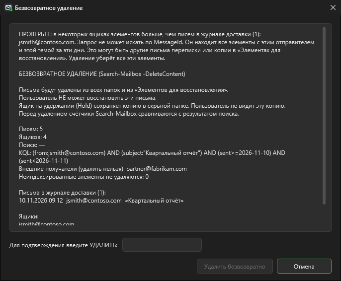
Ящик на Litigation Hold или In-Place Hold сохраняет копию после безвозвратного удаления в скрытой папке. Пользователь её не видит.
Проверка
После каждого удаления EMT снова проверяет каждый ящик. Результат — на вкладке Проверка.
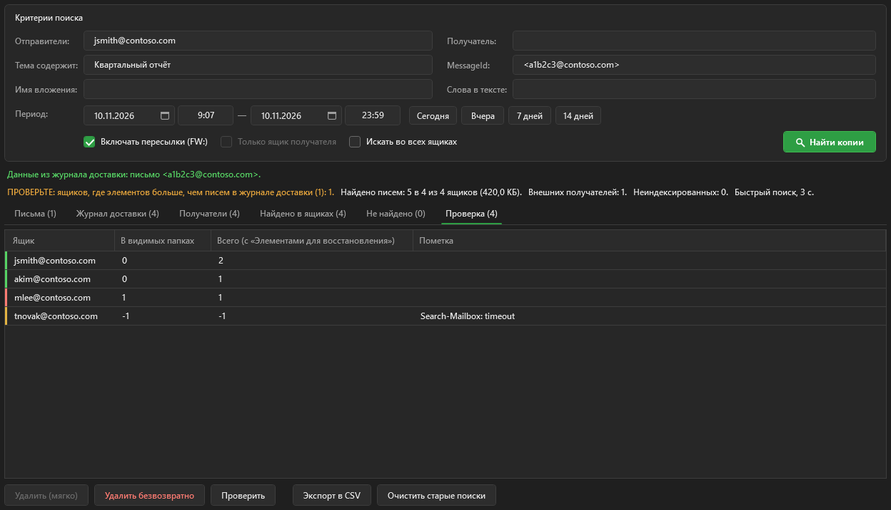
| Левый край | Что значит |
|---|---|
| Зелёный | В видимых папках копий нет |
| Красный | Письмо ещё в видимых папках |
| Жёлтый | Проверка не удалась. См. колонку Пометка. |
После мягкого удаления колонка Всего (с «Элементами для восстановления») больше 0. Так и должно быть.
Очистка старых поисков
- Нажмите Очистить старые поиски.
- Введите возраст поисков в днях.
- Посмотрите список поисков.
- Подтвердите очистку.
EMT удаляет только свои поиски: EMT_* и старые MC_*. Поиск, который ещё выполняется, не удаляется.
Примеры
Письмо не дошло: адреса не существует
- В поле Отправители введите адрес отправителя.
- Нажмите Сегодня.
- Нажмите Найти.
- Найдите письмо с красным краем.
- Выберите письмо.
- Прочитайте колонки Объяснение и Ответ сервера.
Итог: 5.1.1, такого адреса нет. Сообщите отправителю правильный адрес.
Письмо дошло, но пользователь его не видит
- Найдите письмо.
- Выберите письмо.
- Посмотрите колонку Папка у получателя.
- Выберите получателя.
- Нажмите Проверить ящик получателя.
Итог: правило перекладывает письмо в папку «Projects». Сообщите пользователю папку.
Ящик пересылает письма на другой адрес
Статус — Переслано (пересылка ящика), край строки жёлтый.
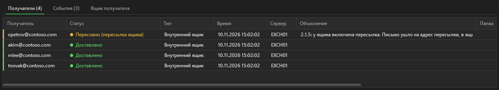
Письмо не попало в ящик. Проверка ящика покажет адрес пересылки.
Скрытая копия для службы безопасности (правило транспорта)
Правило транспорта добавляет скрытую копию. Exchange отправляет её через коннектор отправки (SENDEXTERNAL).
EMT показывает Отправлено наружу.
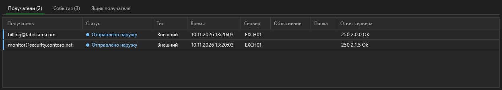
Доставка на внешний сервер задерживается
Статус — Задержано. Exchange повторяет попытки.
Ответ сервера называет причину, например 451 4.4.0.
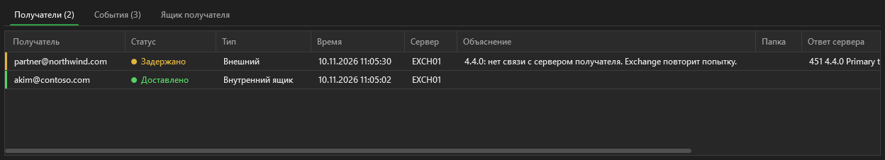
Все письма одному получателю за неделю
- Очистите поля Отправители и Тема содержит.
- В поле Получатель введите адрес.
- Нажмите 7 дней.
- Нажмите Найти.
- Выберите письмо, чтобы увидеть всех его получателей.
Удалить фишинговое письмо у всех получателей
- Найдите письмо на вкладке Поиск писем.
- Выберите письмо.
- Нажмите Удалить это письмо….
- Нажмите Найти копии.
- Посмотрите вкладку Найдено в ящиках.
- Посмотрите на вкладке Получатели, есть ли внешние получатели.
- Нажмите Удалить (мягко).
- Подтвердите удаление.
- Посмотрите вкладку Проверка.
Если у пользователей не должно быть возможности восстановить письмо, после мягкого удаления выполните безвозвратное.
Файлы и журнал действий
| Файл | Содержимое |
|---|---|
%USERPROFILE%\ExchangeMessageTrail\audit.csv | Строка на каждый поиск писем, проверку ящика, поиск копий, удаление, проверку и очистку |
%USERPROFILE%\ExchangeMessageTrail\logs\EMT_<дата>.log | Полный лог одного сеанса |
%APPDATA%\ExchangeMessageTrail\settings.json | Последний сервер, язык, тема, флажки, таймаут и размер окна. Отправители и темы не сохраняются. |
Кнопка Экспорт в CSV сохраняет данные вкладки в CSV-файлы.
Лог, журнал действий и файлы экспорта содержат адреса ящиков. Храните их в защищённом месте.
Язык и тема
- Язык выбирается в списке Язык. Меняется сразу.
- Тема выбирается в списке Тема: Тёмная или Светлая. Меняется сразу.
- EMT запоминает выбор в
settings.json.
Языки — это файлы в папке Lang. Чтобы добавить язык, положите в неё новый файл .lng.
Неполадки
| Проблема | Причина | Что делать |
|---|---|---|
| Окно «Exchange Message Trail could not start» | Ошибка при запуске | Прочитайте причину в окне. Проверьте, что есть папки gui, src и Lang. |
| Ошибка Kerberos при подключении | Компьютер не в домене или имя — не FQDN | Укажите FQDN. Работайте с доменного компьютера. |
| Кнопка выключена | У учётной записи нет роли | См. Подключение и роли. |
| Поиск писем ничего не находит | Не тот период или адрес, или записи журнала уже удалены | Прочитайте подсказки в логе. Увеличьте период. |
| Доставлено, но пользователь не видит письмо | Правило, фильтр нежелательной почты или пересылка | Используйте проверку ящика. |
| Найдено 0 копий, а письмо есть | Письмо не проиндексировано или тема другая | Включите Искать во всех ящиках. Сократите текст темы. |
| Окно работает неправильно | Проблема окна | Запустите EMT-Classic.cmd. Сообщите разработчику о проблеме. |
Особенности Exchange 2019
Эти факты получены на Exchange Server 2019. EMT их учитывает.
| Поведение | Правило |
|---|---|
Командлет *-ComplianceSearch* с -ErrorAction Stop завершается с ошибкой | Не используйте -ErrorAction Stop с этими командлетами. |
Remove-ComplianceSearch удаляет поиск в фоне | Проверяйте, что поиск удалён, ещё до 60 секунд. |
| Выполняющийся поиск удалить нельзя | Дождитесь статуса Completed. |
Многие события DROP имеют успешный код 250 2.1.5 | Смотрите причину в ответе сервера. |
Связь и поддержка
Вопросы и идеи
Вопросы, идеи и помощь: Telegram @mnemo_nic.
Ошибки: GitHub Issues. Не прикладывайте журналы с настоящими адресами ящиков.
Поддержать проект
EMT — бесплатная программа, я делаю её в свободное время. Нашли с помощью EMT потерянное письмо? Сэкономили час во время инцидента? Тогда скажите «спасибо» небольшим донатом. ☕
Каждый донат показывает, что программа нужна, и даёт мне время на следующую версию.
Отправьте TON или USDT в сети TON на этот адрес:

UQDN9J6d6CebRAJZT9N5MnXw7K9rbH_wfM2pb0hSbF7re9-L
Проверьте, что сеть — TON. Перевод в другой сети пропадёт.